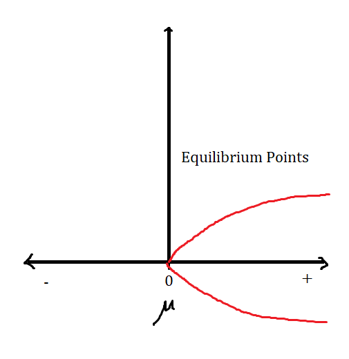
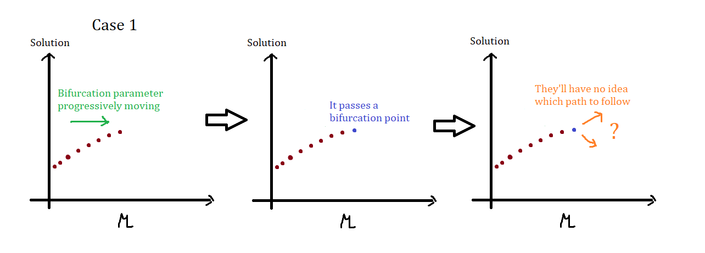
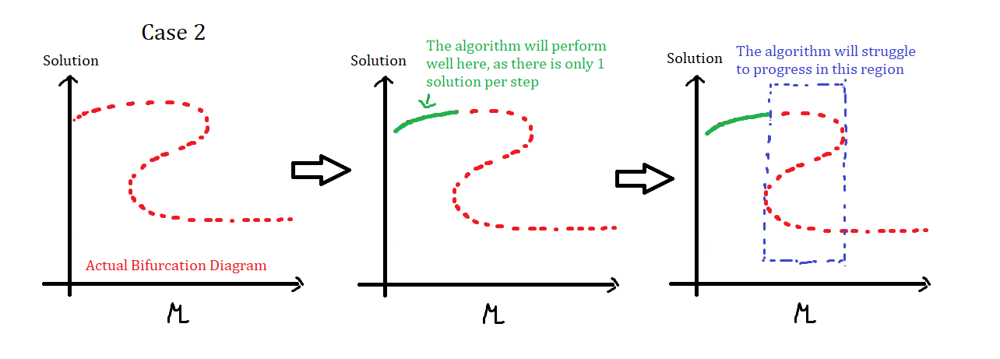
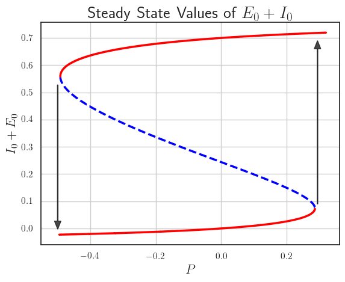

What is that?
During my study at ITB, I took the
Dynamical System course twice - Once in
my bachelor's and the second time during during my master's. Both
courses are very similar and they have one thing in common: the use
of Numerical Continuation.
Bifurcation
Bifurcation in general means
the point or area at which something divides into two branches or
parts. In mathematics lore, Bifurcation Theory is the mathematical study
of changes in the qualitative or topological structure of a given
family of curves, such as the integral curves of a family of vector
fields, and the solutions of a family of differential equations.
In short,
In short,
Bifurcation occurs when a small change in certain parameters
corresponding to a curve causes a sudden qualitative/form behavior
to that curve
Now, consider a nonlinear differential equation below: $$ \dot{x} =
x^2-\mu $$ We will refer to the parameter \(\mu\) as
bifurcation parameters. The equilibrium point for
the differential equation above will be set of all solution \(x\)
such that \(\dot{x}=0\).
For \(\mu=0\), the set of equilibrium point will be \(\{0\}\). If \(\mu=1\), there are no equilibrium point (thus the set of equilibria is \(\{\}\)) and when \(\mu=-1\) it will be \(\{-1, 1\}\). Notice that as the value of \(\mu\) varies, the number of equlibrium points also change.
The bifurcation diagram the graph showing all the observed values (in this case they're the equilibrium points, but it also could be periodic orbits or chaotic attractors) as a function of the bifurcation parameter. Hence, the bifurcation diagram sketch for the problem above may be shown as:
Bifurcation diagram sketch. We have 0 equilibrium point if
\(\mu<0\), one equilibria appears if \(\mu=0\) and there are two
if \(\mu>0\).
For \(\mu=0\), the set of equilibrium point will be \(\{0\}\). If \(\mu=1\), there are no equilibrium point (thus the set of equilibria is \(\{\}\)) and when \(\mu=-1\) it will be \(\{-1, 1\}\). Notice that as the value of \(\mu\) varies, the number of equlibrium points also change.
The bifurcation diagram the graph showing all the observed values (in this case they're the equilibrium points, but it also could be periodic orbits or chaotic attractors) as a function of the bifurcation parameter. Hence, the bifurcation diagram sketch for the problem above may be shown as:

What's so interesting about it?
We can observe that the "branching" phenomenon occured at \(\mu=0\),
and we will refer to it as the
Bifurcation Point. As mentioned
above, there are also commonly observable values other than fixed
points such as: chaotic attractors, periodic orbits occurrence, etc.
For me personally, what makes bifurcation particularty interesting
is not the complexity or the particular physical phenomenon it
gives, but rather on the simplicity of it. It is a good example of a
very simple phenomenon with straightforward definition that can be
so
incredibly difficult to identify.
The problem of finding bifurcation points often times can be
translated into a simple root finding problems, at which obviously
you could solve using numerical solution. The thing about numerical
solution is, they are pretty effective at finding
a solution, but not very reliable to
find ALL of them. Finding
all solutions can be computationally expensive and difficult.
Conventional root finding algorithm struggle as it passes a
bifurcation point, illustrated.


Solution: Pseudo Arc-length Continuation
Instead of having the bifurcation parameters grows slowly and have
the root finding algorithm to find a solution, we can instead
walk along the path to form the
bifurcation diagram. In other words, instead of having the equation
parametrized by the bifurcation parameter, it will be parametrized
by the curve's arc length instead.
Consider a function \(\textbf{F} : \mathbb{R}^n \to \mathbb{R}^n\) with fixed point \(\textbf{x}\in \mathbb{R}^n\) and bifurcation parameter \(\mu \in \mathbb{R}\). Assume \(\textbf{x}\) and \(\mu\) to both be parametrized by the arc-length \(s\), so that \(\textbf{F}(\textbf{x}(s);\mu(s))=0\) for all \(s\).
Let \(s_0\) an initial known fixed point. The main idea is to extrapolate a distance \(\Delta s = s-s_0\) from the known fixed point \((\textbf{x}(s_0), \mu(s_0))\), along the tangent \(\tau\) in the \((\textbf{x},\mu)\) space, $$ \tau = \left(\dot{\textbf{x}}(s), \dot{\mu}(s)\right) = \left(\dfrac{d\textbf{x}(s)}{ds}, \dfrac{d\mu(x)}{ds}\right) $$ as a prediction and then perform Newton iterations to correct that prediction in order to get back onto the branch, but staying on the plane perpendicular to \(\tau\) at a distance \(\Delta s\). Since \(\textbf{x}(s), \mu(s)\) satisfies \(\textbf{F}(\textbf{x}(s), \mu(s))=0\) for all \(s\), the tanget vector \(\tau\) satisfies $$ 0 = \dfrac{d}{ds}\textbf{F}(\textbf{x}(s), \mu(s)) = \textbf{F}_{\textbf{x}}\dot{\textbf{x}}^t + \textbf{F}_{\mu}\dot{\mu} = \left(\textbf{F}_{\textbf{x}}\mid \textbf{F}_\mu\right)\begin{bmatrix}\dot{\textbf{x}}^t \\ \dot{\mu}\end{bmatrix} $$
Consider a function \(\textbf{F} : \mathbb{R}^n \to \mathbb{R}^n\) with fixed point \(\textbf{x}\in \mathbb{R}^n\) and bifurcation parameter \(\mu \in \mathbb{R}\). Assume \(\textbf{x}\) and \(\mu\) to both be parametrized by the arc-length \(s\), so that \(\textbf{F}(\textbf{x}(s);\mu(s))=0\) for all \(s\).
Let \(s_0\) an initial known fixed point. The main idea is to extrapolate a distance \(\Delta s = s-s_0\) from the known fixed point \((\textbf{x}(s_0), \mu(s_0))\), along the tangent \(\tau\) in the \((\textbf{x},\mu)\) space, $$ \tau = \left(\dot{\textbf{x}}(s), \dot{\mu}(s)\right) = \left(\dfrac{d\textbf{x}(s)}{ds}, \dfrac{d\mu(x)}{ds}\right) $$ as a prediction and then perform Newton iterations to correct that prediction in order to get back onto the branch, but staying on the plane perpendicular to \(\tau\) at a distance \(\Delta s\). Since \(\textbf{x}(s), \mu(s)\) satisfies \(\textbf{F}(\textbf{x}(s), \mu(s))=0\) for all \(s\), the tanget vector \(\tau\) satisfies $$ 0 = \dfrac{d}{ds}\textbf{F}(\textbf{x}(s), \mu(s)) = \textbf{F}_{\textbf{x}}\dot{\textbf{x}}^t + \textbf{F}_{\mu}\dot{\mu} = \left(\textbf{F}_{\textbf{x}}\mid \textbf{F}_\mu\right)\begin{bmatrix}\dot{\textbf{x}}^t \\ \dot{\mu}\end{bmatrix} $$
Well the math is quite.. hefty (nguli), but the continuation
algorithm can be implemented as follow:
- At the current value \(s_k\) of \(s_{k+1}\) determine \(\tau\). First solve for \(\textbf{z}\) from $$ \textbf{F}_{\textbf{x}}^{(0)}\textbf{z} = - \textbf{F}_{\tau}^{(0)} $$ and setting $$ \tau = \left(\tau_{\textbf{x}}^{(0)}, \tau_{\mu}^{(0)}\right) = \pm \dfrac{1}{\sqrt{\textbf{z}^t\textbf{z}+1}}\left(\textbf{z}^t, 1\right) $$ with the sign above is chosen such that the orientation of \(\tau\) is close to the tangent vector \(\tau_{previous}\) at the previous value of \(s\). In other words, we require that \(\tau\tau_{previous}^t>0\). This allows \(\mu\) to pass through an extremum as the branch is followed around a bifurcation point. Solving the \(\textbf{z}\) assumes \(\textbf{F}_{\textbf{x}}^{(0)}\) is nonsingular, which is the case except right at the bifurcation point (which is super rare)
- Increment the arclength parameter by \(\Delta s\), and determine \(\textbf{x}(s_{k+1}), \mu(s_{k+1})\) by Newton iteration. For \(k\geq 1\), $$ \left(\textbf{x}_{k+1}, \mu_{k+1}\right)=\left(\textbf{x}_{k}, \mu_{k}\right) + \left(\Delta \textbf{x}, \Delta \mu\right) $$ until converges, where $$ \begin{bmatrix} \textbf{F}_{\textbf{x}}(\textbf{x}^{(k)}, \mu_k) & \textbf{F}_{\mu}(\textbf{x}^{(k)}, \mu_k)\\ \tau_{\textbf{x}}^{(0)} & \tau_{\mu}^{(0)} \end{bmatrix} \begin{bmatrix} \Delta \textbf{x}\\ \Delta \mu \end{bmatrix} =- \begin{bmatrix} \textbf{F}_{\textbf{x}}(\textbf{x}^{(k)}, \mu_k) \\ \tau_{\textbf{x}}^{(0)}(\textbf{x}^{(k)}-\textbf{x}^{(0)})^t + \tau_{\mu}^{(0)}(\mu_k-\mu_0) - \Delta s \end{bmatrix} $$
Example
Observe a system of two nonlinear differential equation below: $$
\begin{align} \dfrac{dE}{dt} &= -E + (k_e - r_e E)S_e(c_1 E - c_2 I
+ P), \\ \dfrac{dI}{dt} &= -I + (k_i - r_i I) S_i (c_3 E - c_4 I +
Q), \end{align} $$
In this example, the observable values are the steady state values of the system \(E_0+I_0\) while the bifurcation parameter is \(P\). Observe the animation shown on the very first center in this page. That is the animation of the system's phase portrait for varying \(P\). At certain point we can see the formation of an orbit, thus signifies the presence of a bifurcation (precisely, a Hopf birfurcation). The result is given below:
Steady state diagram for the problem above.
In this example, the observable values are the steady state values of the system \(E_0+I_0\) while the bifurcation parameter is \(P\). Observe the animation shown on the very first center in this page. That is the animation of the system's phase portrait for varying \(P\). At certain point we can see the formation of an orbit, thus signifies the presence of a bifurcation (precisely, a Hopf birfurcation). The result is given below:

The stability for each coordinates of the bifurcation diagram can be
determined by using the linearized Jacobian. You can check out the
program used to produce the diagram in this
repository